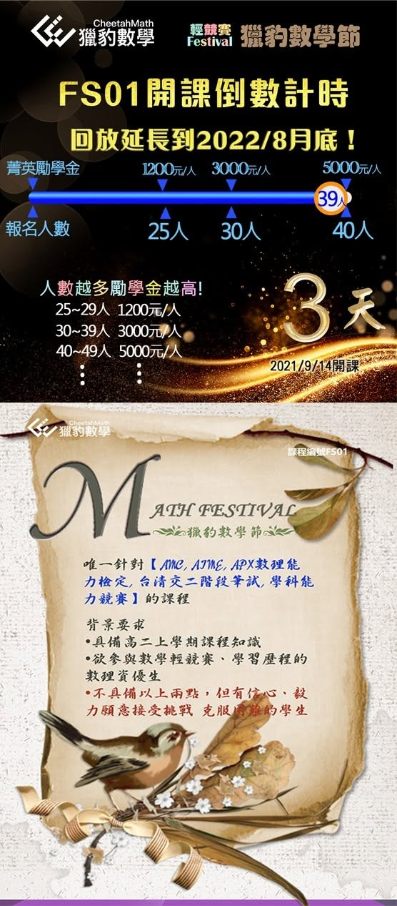

常有家長問我，為什麼孩子要學資優數學？如果不參加競賽，有必要學得這麼難的嗎？
其實獵豹的「資優課程」不是要教得「難」，而是要訓練孩子 「#優質的思考、#卓越的分析方法、#良好的科學訓練」！
記得在一次「#思考數學」課堂上，當宗翰老師示範了「#專家模式」中如何用物理思維破解一個本來必須使用大學微分方程才能解決的數學問題後，同學們都感到震撼不已！
老師說道：
一個根深蒂固的錯誤觀念，以為只有優秀的頭腦才適合這種訓練？！
其實正是透過這些訓練才讓我們的頭腦優秀！
年輕的大腦潛力無窮，每個智力正常的孩子都應該學習好的、卓越的思維方式！
獵豹的資優數學絕不是只為了考試得高分，而是透過這些知識與訓練，將一個人的思緒變得更有條理、有邏輯、有組織有方法。這對生活及未來工作中都將非常有助益。
此外，數學科是學習的火車頭，對學習其他科目有帶動作用。
日前和大家分享的：「要學好理化 先學好數學」
～看2021台灣學測有感～（上）
No pains, no gains！跳脫舒適圈的學習！
同學們經過一番燒腦的鍛鍊、毅力的淬鍊，流汗的努力後，必將脫胎換骨！
※索取獵豹【#AMC常用數學英文單字表 】
※參加【#FS01體驗課程】
請私訊星媽，孩子 姓名 學校 和年級!
